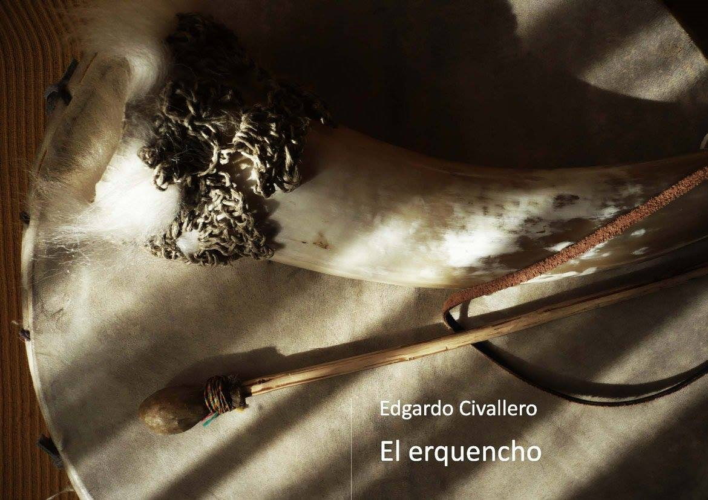

El erquencho
Inicio > Libros digitales sobre música > El erquencho
Cómo citar este trabajo: Civallero, Edgardo (2025). El erquencho. Edición de archivo. Bogotá: El Zorro de Abajo Editora.
Descargar en PDF.
El texto constituye un estudio monográfico riguroso y profundamente documentado sobre uno de los aerófonos más singulares del mundo andino meridional: el erquencho o erque. A partir de un enfoque que combina análisis organológico, contextualización etnomusicológica y observación comparativa, el texto explora la historia, la morfología, la función social y el simbolismo de este instrumento, presente principalmente en el noroeste argentino y el sur de Bolivia, en la región cultural del antiguo Qullasuyu.
El erquencho es descrito como un clarinete idioglótico —el único de lengüeta simple conocido en la tradición andina— compuesto por una corta boquilla o pajuela de caña (Arundo donax o bambúes locales) de entre 8 y 15 cm, y un gran pabellón de amplificación que puede ser de asta, calabaza, metal o materiales modernos. La lengüeta, tallada directamente en la caña y orientada hacia el ejecutante, se mantiene libre gracias a la inserción de un cabello humano o animal, que evita su adherencia por humedad. La ausencia de orificios de digitación no impide la variación de alturas: el intérprete modula el sonido mediante presión labial, intensidad del soplo y puntos de apoyo dentales, generando una gama expresiva amplia y rica.
El resultado sonoro —un zumbido ronco, quejumbroso y profundamente humano— constituye la marca característica del instrumento. Se vincula a la estética vocal de la región, definida por el canto de coplas, expresión emblemática del Noroeste argentino y del sur de Bolivia. Este estilo, identificado por Carlos Vega como "música tritónica", privilegia la voz natural, el portamento y el falsete o kenko (del quechua qinqu, "ondulación"). Los erquenchos reproducen e imitan esas inflexiones, estableciendo una relación íntima entre voz y soplo. La ejecución se realiza casi siempre junto a una caja —tinya, caja puneña, chayera o chapaca—, percutida con una maza (huajtana). Ambos instrumentos son tocados simultáneamente por el mismo músico: el erquenchero sostiene con una mano el pabellón y el membranófono y con la otra golpea la caja, generando una textura sonora en la que la vibración del cuero y el zumbido de la lengüeta se entrelazan.
El texto destaca la correspondencia del erquencho con los ciclos rituales y agrícolas. Se lo clasifica como instrumento "de verano" o "de estación húmeda", activo entre Todos los Santos y Pascua, un período conocido como jallu pacha o paray tiempu. Los tabúes musicales andinos establecen su uso masculino, aunque se registran excepciones. En las celebraciones del Carnaval, el instrumento protagoniza las erquenchadas, ejecuciones colectivas en las que varios músicos tocan simultáneamente, sin concordancia tonal, creando densos tapices heterofónicos de gran potencia expresiva. En Bolivia acompaña procesiones y fiestas religiosas —como la de la Virgen de Chaguaya en Tarija—, mientras que entre los Jalq'a de Chuquisaca aparecen dos versiones complementarias: el warmi erqe ("erque mujer"), agudo y pequeño, y el qhari erqe ("erque varón"), más grande y grave. Ambos se combinan mediante una técnica de hocket para producir melodías conjuntas.
Las secciones siguientes examinan las variantes locales. En Argentina el instrumento se extiende por las provincias de Jujuy y Salta, con adaptaciones que reflejan las condiciones materiales de cada zona: en la puna se utilizan cuernos de cabra por falta de ganado vacuno; en el oriente jujeño, chapa de cobre o bronce; y en Salta, combinaciones de asta y metal que alcanzan tamaños monumentales. Algunas versiones modernas sustituyen la lengüeta idioglótica por una heteroglótica, fabricada con láminas de radiografía o materiales similares, modificando su carácter acústico tradicional. En Bolivia —donde predomina el nombre erque, probablemente la forma original—, el instrumento es frecuente en los departamentos de Tarija, Potosí y Chuquisaca, con pabellones bovinos ornamentados y lengüetas abiertas directamente en el nudo de la caña.
El texto rastrea además la presencia del erquencho más allá de los Andes, en regiones chaqueñas y en las tierras bajas, donde su morfología y función se han adaptado a contextos distintos. Entre los Mak'á del Chaco central y boreal, el instrumento recibe el nombre wakasekech; entre los Ashlushlay o Nivaklé, taklúk; y entre los Chorote, waka kiú. Estas variantes, de registro más grave y con cuernos menores, reflejan la difusión interregional de un modelo acústico común a la frontera entre el altiplano y el Chaco.
El autor cierra con un análisis sobre el origen y genealogía del instrumento. Hasta la fecha, no existen evidencias arqueológicas o documentales que permitan afirmar una raíz prehispánica para el erquencho. Las hipótesis más aceptadas lo vinculan a aerófonos campesinos europeos de lengüeta simple, introducidos durante la colonia y adaptados al entorno andino. Se mencionan posibles paralelos con el turullu asturiano o la berrona cántabra, que comparten morfología y técnica de ejecución. La adopción del instrumento por comunidades indígenas habría producido un proceso de resemantización, transformando un artefacto rural europeo en un símbolo ritual y sonoro plenamente andino.
El libro se completa con referencias bibliográficas y materiales de documentación sonora y visual —grabaciones de campo, discos patrimoniales, fotografías de intérpretes y colecciones museográficas—, lo que refuerza su valor como fuente pedagógica. El texto logra articular descripción técnica, contexto cultural y poética del sonido, haciendo del erquencho no sólo un objeto musical, sino un espejo de la identidad del Noroeste argentino y del sur boliviano: una voz híbrida, nacida del cruce entre la caña y el cuerno, entre el soplo humano y la montaña.